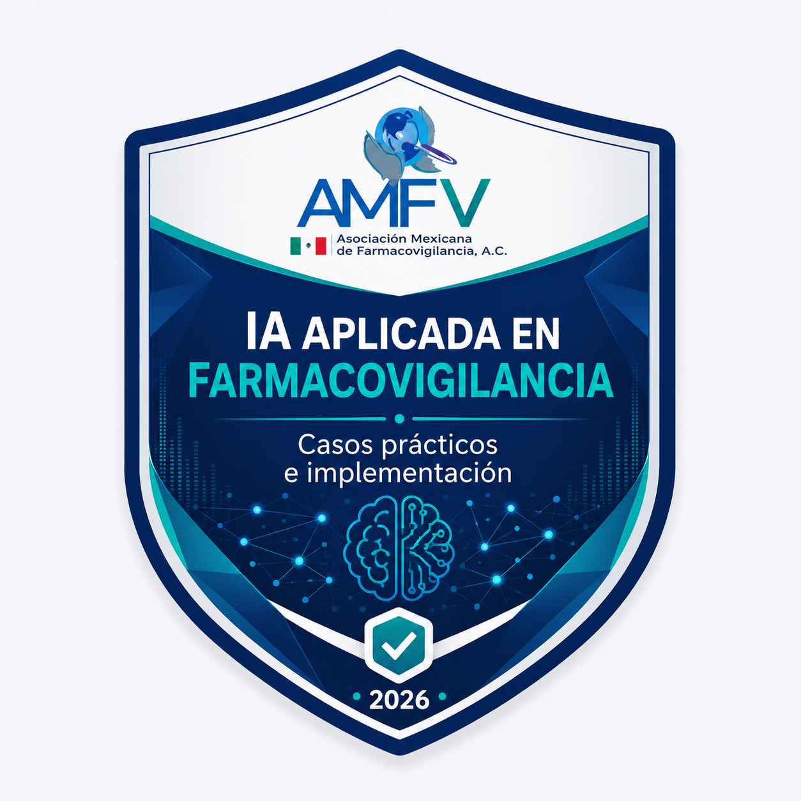

Emisor de prueba: Prueba personal Eleazar - No válida como constancia oficial
Tipo de evidencia: Página descriptiva para validar el flujo técnico de constancias digitales.
Esta página fue creada para practicar el flujo completo de generación, publicación y envío de constancias digitales verificables antes de ejecutar el proceso institucional con AMFV.
La insignia se utiliza únicamente para validar el proceso técnico. No acredita participación oficial, asistencia real ni emisión institucional.